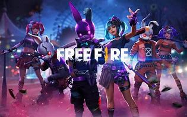

10 jogos online mais jogados no mundo em 2022
Os 10 jogos online mais jogados no mundo em 2022 O número de jogadores ativos em um game pode variar bastante a cada ano. Para esta lista, recorremos a plataformas como o Steam e os sites dos desenvolvedores para saber quais são alguns dos jogos online mais jogados e populares do mundo em 2022. Recolhemos dados relevantes como a estimativa aproximada dos jogadores ativos e o número de contas registradas dos games mais jogados.
A ordem dessa lista foi definida aleatóriente, para mostrar alguns dos jogos mais jogados do mundo
Free Fire
- 
-

Neste clássico battle royale, lute até que você seja o último sobrevivente da ilha. Quando lançado, Garena Free Fire se tornou o Melhor Jogo em Voto Popular pela Google Play e atraiu milhões de gamers que se tornaram aficionados pela aventura. No jogo, você tem a possibilidade de batalhar com até 50 jogadores, explorar a ilha e obter armas e outros equipamentos para se tornar o vencedor da partida.
Número de downloads: mais 1 bilhão segundo Play store
Gênero: Battle Royale
Modo de jogo: multijogador
Plataformas: IOS e Android
Video ilustrativo do jogo
PlayerUnknown's Battlegrounds


PlayerUnknown's Battlegrounds (PUBG) é um jogo do gênero battle royale, uma mistura de sobrevivência e exploração de territórios. No PUBGS, os competidores são lançados de paraquedas numa ilha sem absolutamente nada. Tudo, incluindo as próprias roupas e armas, tem que ser conquistado dentro do território, enquanto o jogador tenta superar os obstáculos e se manter na ilha o maior tempo possível. Até 100 jogadores podem ser lançados na ilha de uma vez, mas há apenas um ganhador, ou uma equipe vencedora, caso esteja jogando em times.
Número de downloads: mais de 45 milhões
Gênero: battle royale
Estilo de jogo: multiplayer
Plataformas: Microsoft Windows, PlayStation 4, Xbox One, Android, iOS
Minecraft


A ideia básica desse jogo que conquista multidões é a construção por blocos. Os competidores precisam recolher recursos para que possam sobreviver, criando ambientes de maneira criativa. O jogo possui vários modos distintos, mas o principal é o "Survival". Nele, o objetivo é passar por diferentes fases, cada vez mais complicadas, até chegar a batalha final, com o Ender Dragon. A primeira versão de Minecraft foi lançada em 2009 e no Brasil o jogo lidera a lista com a maior quantidade de horas no Youtube Gaming.
Número de downloads: mais de 1 bilhão na versão de pc e mais 10 milhões na play store
Gênero: sandbox
Modo de jogo: multijogador e um jogador
Plataformas: Microsoft Windows, macOS, Linux (Android e Ios na versão mobile)
Video ilustrativo do jogo
Apex Legends


Nesse battle royale game, você precisa ser muito esperto, rápido e certeiro para levar a melhor. Cada Lenda disponível para o jogo tem sua própria personalidade (alguns são soldados, outros bandidos) e dispõe de habilidades únicas que, se bem exploradas por você, podem levar seu Esquadrão à vitória. E a vitória nos Jogos Apex significa riqueza, glória e fama. Está preparado? O jogo está disponível grátis na Steam.
Número aproximado de jogarores: 50 milhões de jogadores ativosGênero: battle royale
Modo de jogo: multijogador
Plataformas: Microsoft Windows, PlayStation 4, Xbox One(Android e IOS na versão mobile)
Video ilustrativo do jogo
Fortnite


Um dos jogos mais populares e celebrados em todo o mundo, Fortnite foi lançado em 2017 e atraiu 125 milhões de jogadores somente no seu primeiro ano de estreia. Hoje, existem duas modalidades do game, Fortnite: Save the World e Fortnite: Battle Royale. Nos dois modos de jogar, você deve coletar materiais como madeira, tijolo e metal para a construção das suas fortificações. Além disso, armas estão disponíveis para que você consiga finalizar uma missão ou ser o último jogador no mapa.
Número aproximado de jogadores: 45 milhões de jogadores ativosGênero: battle royale e missão
Modo de jogo: multijogador
Plataformas: Microsoft Windows, iOS, Android, Mac OC, Playstation 4, Xbox One, Nintendo Switch
Video ilustrativo do jogo
Counter-Strike: Global Offensive

O que é bom nunca sai
de moda, não é verdade? O super
popular Counter- Strike, lançado em
1999, é um bom exemplo disso.
Disponível desde 2012 com a versão
Global Offensive (CS:GO), o jogo é
um dos mais tradicionais no mundo
dos games. Os jogadores competem
em equipes e se posicionam como
terroristas (T) e contra
terroristas (CT). Os jogadores T
devem implantar uma bomba no campo
inimigo, enquanto os CT têm que
desativá-la, destruindo inimigos
e protegendo as possíveis vítimas.
Há diversos campeonatos mundiais
organizados para fãs do jogo, como
é o caso dos chamados Majors. Essas
competições têm premiações de
quase 4 milhões de reais e alguns
nomes brasileiros já fizeram
história levando o prêmio para casa.
Gênero: First-person shooter
Modo de jogo: um jogador e multijogador
Plataformas: Microsoft Windows, OS X, PlayStation 3, Xbox 360, Linux
Video ilustrativo do jogo
Hearthstone: Heroes of Warcraft


Os criadores de Hearthstone: Heroes of Warcraft o definem como "fácil de aprender e impossível de largar". Funciona assim: os jogadores devem escolher cartas de modo a montar um deck, que nada mais é do que uma coleção de armas e feitiços. O deck de cada competidor é representado por um herói, que tem poderes únicos. A força de cada herói é provada no campo de batalha onde os mais fortes sobrevivem. A ideia do jogo é simples e ele está disponível gratuitamente e em português.
Número aproximado de jogadores: 30 milhões de jogadores ativosGênero: jogo de cartas estratégico on-line
Modo de jogo: um jogador e multijogador
Plataformas: Microsoft Windows, Mac OS X, iOS e Android
Video ilustrativo do jogo
League of Legends


Conhecido como LOL, o League of Legends é o favorito entre os gamers, uma verdadeira febre no mundo dos jogos online! O objetivo do jogo é entrar no campo inimigo com os chamados "Campeões" - que possuem poderes distintos -, vencer os obstáculos, chegar ao Nexus (o coração da base de cada equipe ou competidor) e destruí-lo. O League of Legends conta com competições internacionais enormes, reunindo fãs de todos os lugares do mundo. O principal evento de LOL no Brasil é o Campeonato Brasileiro de League of Legends (CBLoL).
Número aproximado de jogadores: 27 milhões de jogadores ativosGênero: Multiplayer Online Battle Arena (MOBA)
Modo de jogo multijogador
Plataformas: Microsoft Windows, macOS
Video ilustrativo do jogo
Call of Duty Mobile


Eis a nova versão de um dos episódios mais adorados dessa viciante franquia. Versão nova, história nova: desta vez, você é um soldado de elite que precisa fazer tudo para impedir que terroristas façam uso de armas químicas e, de quebra, evitar uma iminente guerra mundial. Está preparado para a mais importante missão da sua vida?
Número aproximado de jogadores: 15 milhões de jogadores ativosGênero: jogo de tiro em 1° pessoa
Modo de jogo: um jogador e multijogador
Plataformas: Microsoft Windows, PlayStation 4 e Xbox One
Video ilustrativo do jogo
Roblox
Explore diversos mundos em 3D e crie histórias e memórias lendárias. Roblox é um popular jogo baseado em um mundo aberto, onde os jogadores têm a possibilidade de criar personagens e seu próprios universos virtuais. Além disso, os jogadores têm a possibilidade de criar amizades dentro do game e adicioná-los à sua lista de amigos.
Número aproximado de jogadores: mais de 200 milhões de jogadores mensaisGênero: sandbox
Modo de jogo: multijogador
Plataformas: Microsoft Windows, Xbox One, iOS, Android, Fire OS